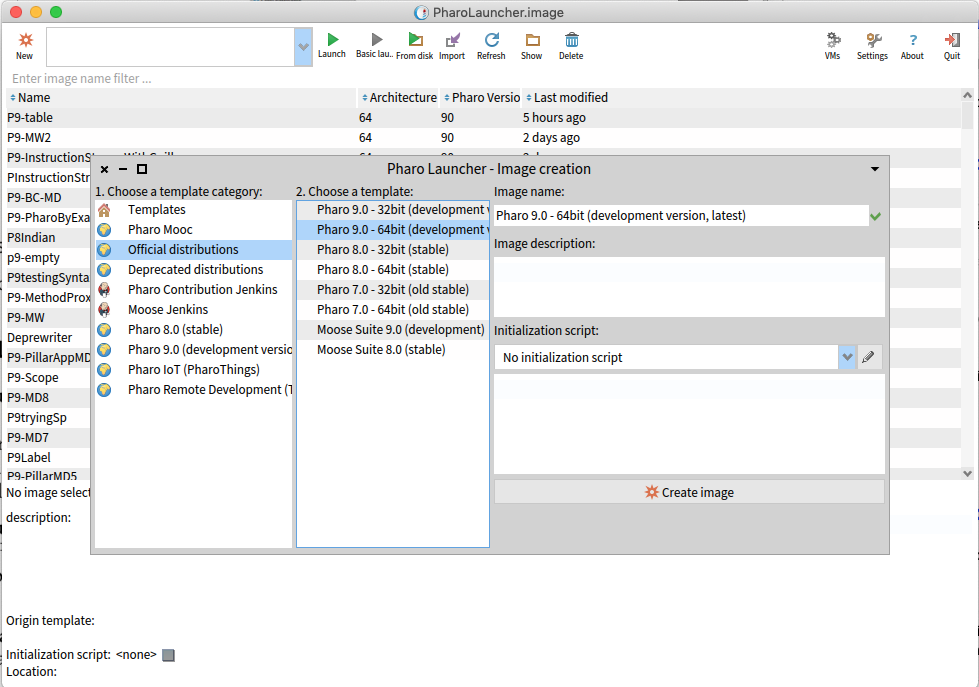
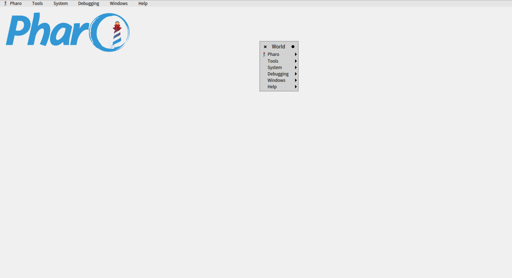
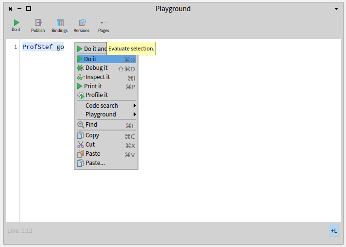
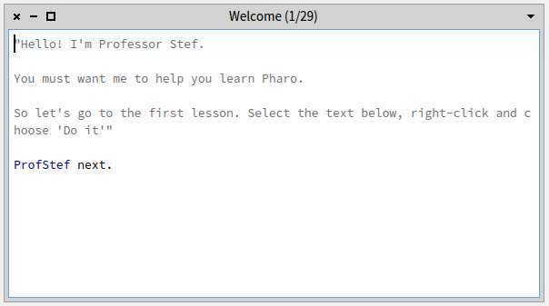

2 Getting Started with Pharo
In this chapter, you will learn how to start Pharo and the different files that make up a Pharo system and the roles they perform, learn about the different ways of interacting with the system, and discover some of the basic tools. You will also learn how to define a new method, create an object, and send it messages. The chapter shows (1) how to install Pharo and (2) how to launch Pharo.
2.1 Installing Pharo
Pharo does not need to install anything in your system, as it's perfectly capable of running standalone. As will be explained later, Pharo consists of a virtual machine (VM), an image, a set of changes and a set of sources. There are a number of different ways of getting these installed and set up on your system.
The Pharo Launcher
Pharo Launcher is a cross-platform application that facilitates the management of multiple Pharo images and VMs. It is available as a free download from http://pharo.org/download. Click the button for your operating system to download the appropriate Pharo Launcher; it contains everything you need to run Pharo.
Zeroconf scripts
Alternatively, https://get.pharo.org/ offers a collection of scripts to download specific versions of Pharo. This is really handy for automating the installation of Pharo, or if you prefer to work using your operating system's command line interface.
To download the latest Pharo 9.0 full system, use the following snippet:
wget -O- get.pharo.org/90+vm | bashThen you can execute the following to start the image:
./pharo-ui Pharo.imageAt present these scripts will only work on a a macOS or Linux system.
2.2 File components
Pharo consists of four main component files. Although you do not need to deal with them directly for the purposes of this book, it is useful to understand the role that they each play.
1. The virtual machine (VM) is the only component that is different for each operating system. The VM is the execution engine (similar to the Java Virtual Machine). It takes Pharo bytecode that is generated each time a user compiles a piece of code, converts it to machine code, and then executes it. Pharo comes with the Cog VM, a very fast JITing VM.
The VM executable is named:
Pharo.exefor Windows,pharofor Linux, andPharofor macOS (inside a package also namedPharo.app).
The other components listed below are portable across operating systems, and can be copied and run on any appropriate virtual machine.
2. The image file provides a snapshot of a running Pharo system. It's a cross-platform format: an image file on one operating system can be used on any other operating system with a compatible VM. An image file contains all the objects of a running system and their state at a given point in time, including all the classes and the compiled methods (since they are objects too). An image is basically a virtual object container.
The image file is named for the release (so Pharo9.0.image for a Pharo 9.0 image) and it is synced with the changes file.
3. The changes file logs of all source code modifications (such as the changes you make while programming in Pharo) made to the Pharo system. Each release provides a nearly empty file named for the release, for example, Pharo9.0.changes. This file supports a per-method history which can be used for showing diffs or reverting changes. It means that even if you did not manage to save the image file before a crash (or you just forgot), you can still recover your changes from this file. A changes file is always coupled with an image file. They work as a pair. Do not mess with it. Even if Pharo can run without it, you could lose all of your work if haven't saved it with git.
4. The sources file contains the source code for parts of Pharo that do not change frequently. This file is important because the image file format stores only objects including compiled methods and their bytecode and not their source code. Typically a new sources file is generated once per major release of Pharo. For Pharo 9.0, this file is named PharoV90.sources.
Image/Changes pair
The .image and .changes files provided by a Pharo release are the starting point for a live environment that you will adapt to suit your needs. These files are modified as you work with Pharo, so you need to make sure that they are writable. It's also a good idea to stop your anti-virus software from scanning these files. The .image and .changes files are intimately linked and should always be kept together, with matching base filenames. Never edit them directly with a text editor, as .image holds your live object runtime memory, which indexes into the .changes files for the source. It is a good idea to keep a backup copy of the downloaded .image and .changes files so you can always start from a fresh image and reload your code. However, the most efficient way to back up code is to use Iceberg with Git (a version control system): it provides an easy and powerful way to both backup and track your changes.
Common setup
The four main component files above can be placed in the same directory, but it's a common practice to put the virtual machine and sources file in a separate directory where everyone has read-only access to them.
Do whatever works best for your style of working and your operating system. If you're just starting out with Pharo it's better to use the Pharo Launcher, since it will manage everything for you.
2.3 Launching Pharo with the Pharo Launcher
Pharo Launcher is a tool that helps you download and manage Pharo images. It is very useful for getting new versions of Pharo (as well as updates to the existing versions that contain important bug fixes). It also gives you access to images preloaded with specific libraries that make it very easy to use those tools without having to manually install and configure them.
Pharo Launcher can be found at https://pharo.org/download together with installation instructions and download links depending on your platform.

After installing Pharo Launcher and opening it (like you would do for any Pharo image), you should get a GUI similar to Figure 2.1. Here we clicked on the top left New icon to download a new Pharo image from the server.
The back column lists images that live locally on your machine (usually in a shared system folder). You can launch any local image directly (either by double-clicking, or by selecting it and pressing the Launch button). A right-click context menu provides several useful functions like copying and renaming your images, as well as locating them on the file system.
You can use your own local images with Pharo Launcher, in addition to working with the images you downloaded. To do so, simply import your .image and its associated .changes files using the launcher.

2.4 Launching Pharo via the command line
If you are using a standalone version do whatever your operating system expects: drag the .image file onto the icon of the virtual machine, or double-click on the .image file, or at the command line type the name of the virtual machine followed by the path to the .image file.
- On macOS, double click the
Pharo9.0.appbundle in the unzipped download. - On Linux, double-click (or invoke from the command line) the
pharoexecutableBashscript from the unzipped Pharo folder. - On Windows, enter the unzipped Pharo folder and double click
Pharo.exe.
In general, Pharo tries to "do the right thing". If you double-click on the VM, it looks for an image file in the default location. If you double-click on an .image file, it tries to find the nearest VM to launch it with.
If you have multiple VMs installed on your machine, the operating system may no longer be able to guess the right one. In this case, it is safer to specify exactly which ones you meant to launch, either by dragging and dropping the image file onto the VM, or specifying the image on the command line (see the next section).
The general pattern for launching Pharo from the command line is:
<Pharo executable> <path to Pharo image>Linux command line
Assuming you're in the directory where the Zeroconf script downloaded the required files:
./pharo Pharo.imagemacOS command line
Again, assuming you downloaded Pharo using Zeroconf:
./pharo Pharo.imageWindows command line
As we mentioned, Zeroconf won't work with a Windows system, so you will have to download the right VM and image files yourself. But running it should be just as easy:
Pharo.exe Pharo.image2.5 Saving, quitting, and restarting a Pharo session
You can exit Pharo at any point by closing the Pharo window just as you do with any other application window. Additionally, you can use the menu bar, or the World Menu, and select either Save and quit or Quit.
In either case, Pharo will display a prompt to ask you about saving your image. If you do save your image and reopen it, you will see that things are exactly as you left them: the running programs, the open windows, the positions of the open windows. This happens because the image file stores all the objects (the edited text, the added methods, the window positions... because they are all objects) that Pharo has loaded into your memory so that nothing is lost on exit.
When you start Pharo for the first time, the Pharo virtual machine loads the image file that you specified. This file contains a snapshot of a large number of objects, including a vast amount of pre-existing code and programming tools (all of which are also, you guessed it, objects). As you work with Pharo, you will send messages to these objects, you will create new objects (by sending messages to objects!), and some of these objects will 'die' and their memory will be reclaimed (garbage collected).
When you quit Pharo, you will normally save a snapshot that contains all of your objects. If you save normally, you will overwrite your old image file with the new snapshot. Alternatively, you may save the image under a new name.
When you save your image the .image file is updated with the snapshot of your running Pharo system. The .changes file will also be updated: it will have a log of all the changes you've made to the image since the last update appended to it. As we've seen above, the .changes file can be very useful for recovering from errors, or replaying lost changes. More about this later!
It may seem like the image file should be the key mechanism for storing and managing software projects, but in practice that is not the case at all. There are much better tools for managing code and sharing software that is developed in a team. Images are useful, but you should be very cavalier about creating and throwing away images. Versioning tools such as Iceberg offer us a much better way to manage and share code. In addition, if you need to persist objects, you can use a package such as Fuel (a fast object binary serializer) or STON (a textual object serializer), or even a database.
2.6 For the fast and furious
Sometimes reading long chapters about a system that's as full of features as Pharo can be, well, boring. If you've already got a working Pharo system installed on your computer, and you know a little bit about how everything works, you might want to learn the basics by using ProfStef and then skip forward to the next chapter: a tutorial to define a simple counter and its associated tests. You can also watch the corresponding video available at http://mooc.pharo.org.
To launch ProfStef type the following expression:
ProfStef goin a Playground, and then execute it by performing a Do it, as shown in Figure 2.3.
If all of that means nothing to you, then don't worry: it will soon enough. Just read on...

This expression will trigger the ProfStef tutorial (as shown in Figure 2.4), which is a great place to start to get a feel for Pharo syntax.
Congratulations! You have just sent your first message! Pharo is based on the concept of sending messages to objects. The Pharo objects are like your soldiers, just waiting for you to send them a message they can understand. We will see exactly how an object understands a message later on.

2.7 Chapter summary
- Pharo systems can be managed on your computer using the Pharo Launcher. Alternatively, you can download Pharo using the Zeroconf scripts.
- A running Pharo system consists of a virtual machine, a source file (
.sources), an image file (.image) and a changes file (.changes). Only these last two change, as they record the latest snapshot of your running system. - When you open a Pharo image, you will find yourself in exactly the same state (i.e., with exactly the same running objects) that you had when you last saved that image.